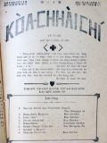
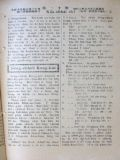

Languages
台文
｜
中文
｜
日本語
｜
English
字體
小
｜
中
｜
大
首頁
/
白話字數位典藏
白話字數位典藏全文檢索
查詢模式
選擇年代
清國時代(1885-1895)
日本時代(1895-1945)
戰後(1945-1969)
1885-1895
1896-1905
1906-1915
1916-1925
1926-1935
1936-1945
1946-1955
1956-1965
1966-1969
1970-1980
1980-1990
1990-2000
2000-2010
2010-
選擇文類
詩
散文
小說
戲劇
傳記
選擇作者
陳清忠
陳清義
編輯部
柯設偕
吳天命
明有德
偕叡廉
周天來
劉華義
王守勇
林茂生
陳添旺
柯維思
王占魁
賴仁聲
陳瓊琚
雪峰逸嵐
吳清鎰
郭水龍
蕭樂善
許水露
葉金木
陳金然
章王由
廖得
鄭連坤
潘道榮
楊士養
梁秀德
劉約翰
周淑慧
高金聲
林燕臣
黃六點
蔡愛義
許有才
主筆
巴克禮
郭朝成
陳鳩水
張基全
陳明清
陳能通
拾穗生
顏振聲
卓恆利
傳道局
胡文池
劉主安
鄭兒玉
詹德建
Google Search
Yahoo Search
全部
刊名
標題
標題(教羅)
全文
全文(教羅)
作者
第90頁，共93頁(共1,848筆資料) 0.68637704849243sec
1
...
88
89
90
91
92
93
To Page
GO
文字列表
圖文列表
排序
日期
文類
刊名
作者
影像
[1927-8 芥菜子 文類-散文 作者-偕叡廉/Kai Jōe-liâm]
(2)
馬太馬可牧師 [ Má-thài Má-khó Bo̍k-su ]
馬太馬可牧師。 佇美國有一位牧師名叫馬可姓做馬太這款的名姓，實在真罕有。馬太馬可牧師佇宗教中是世界大人物的一个。伊的學問深，伊的 口才好，伊的信tek堅固，伊的心志熱，伊的謙卑，伊的疼痛會堪得做人的模範。牧師的教會就是通世界長老教會中第一大的。會友有4000外人，長老有150人。 我對久久就捌聽見馬太博士的名，也常常欣慕愛聽伊傳主的福音。拄好佇4年前去加州的時有聽見講某禮拜欲請博士來演講。彼早起我量較早去赴禮拜。到位拜堂已經坐到欲tīⁿ-tīⁿ，若是猶有規陣人直直來，到尾袂得入，著佇外面徛。 閣無偌久馬太博士上台頂。伊是50外歲人，sán-sán，總是伊的懸約略有6 呎 3吋。 吟詩...
[1927-8 芥菜子 文類-小說 作者-詹德建/Chiam Tek-kiàn]
(2)
老母予蜂叮著的時 [ Lāu-bú hō͘ phang tèng-tio̍h ê sî ]
「老母予蜂叮著的時。」 這个故事是我對一本冊看的，我看了有大感激我的心，也不止心適，所以我有想欲報予大家知。若會做大家的利益是真好。 「有一擺一个牧師，問一个囡仔講，你對甚物是就捌救主，也你的罪，得著赦免的事你kám實在知影mah？囡仔隨時應講著，我的罪得著赦，我有實在知影。」「你會知是甚物時？」囡仔隨時in講，「老母予蜂叮著的時」。「老母予蜂叮著的時，這是甚物意思？」囡仔應講；我的老母對真早的時，就常常教示我講救主有替我死，總是我袂會了解彼个意思。有一年的夏天，老母佇灶腳的隔壁間，兩个手ńg pih懸懸teh熨衫我佇外口的埕teh thit-thō 的時，忽然一隻的虎頭蜂...
[1927-8 芥菜子 文類-散文 作者-蕭樂善/Siau Lo̍k-siān]
(2)
聖經研究會 [ Sèng-keng gián-kiù-hoē ]
聖經研究會 聖經有包上帝的性質佇teh。人欲實在捌伊著tháu開到得著彼个實在的。野球(baseball)是真硬，外面chhòng細pán的樹奶來包，真oh得算lìn，我拍算規粒是按呢來成的，我就直直共伊留到內面就得著這粒實腹的樹奶球。內面是樹奶外面亦是樹奶；總是無相同。平常的捌上帝佮入佇聖經的深奧來捌的上帝是無相同。 深捌上帝才會知上帝對咱有甚物款的要求，亦才會順命令。聖經的智識就是教會的財產佮教會的地基，快搖choah，快犯罪的教會就是地基無hē佇實在的地。咱逐人無掠聖經的智識做無要緊，就用心來想來研究亦的確無看輕。這是現時教會所欠的一項。 欲讀，抑是越念聖經...
[1927-8 芥菜子 文類-散文 作者--/-]
(1)
教囝的法度 [ Kà kiáⁿ ê hoat-tō͘ ]
教囝的法度 第三章 賞罰 一家親像這國。老父做王，老母做王后，著賞罰有章程親像佇國按呢。設使有這个王共人講，寡人看百姓若著傷，不忍看伊teh受刑罰，人的確叫伊做戇的王，伊的國內也的確ta̍uh-ta̍uh擾亂，做父母也親像按呢，若kan-ta疼伊的囝。攏無責督伊，人也的確叫伊做戇的父母，箴言講，箠仔若無夠囝的身軀，無通講是疼，有人為著家己的快樂就好，無愛用好教示伊的囝兒，驚家己艱苦，愛看活過日。對按呢囝兒毋疼伊的父母，袂記得伊的父母的恩，紲變做忤逆，若責罰囝兒siuⁿ嚴，有害著囡仔，若款待囝兒siuⁿ寬，就會受災厄。 賞罰著拄好，呵咾哄喝的話，做父母的人，毋通常常講...
[1927-8 芥菜子 文類-散文 作者-陳添旺/Tân Thiam-ōng]
(1)
沉地。[龜裂] [ Tîm-toē.[ku-li̍h] ]
沉地。[龜裂] 陳添旺記。 離Lâm-khàm有一phò͘的遠，是隔壁坑，地號名陳厝坑倚佇坑頭的地。這个坑早是陳姓來開墾，所以號這个命，taⁿ嘛猶是姓陳佇遐，也有出事，閣有錢出丁，taⁿ有ná失敗。 近日人teh喊地沉落去，真濟人去看，官廳也去勘驗。 佇6月10號下晡我佮吳逢春醫生也就撥工去共伊看bāi，耳聞不如眼見，真正有親像沉地的款。 這个所在是陳恁兄的，拄佇伊的厝是周圍chiâu振動，厝地佮壁攏裂真大裂，gîm石攏pit，有的斷做koe̍h；現時人毋敢蹛佇厝內，佇場埕搭寮仔teh tiàm。 面積山佮田有五甲地以上攏振動裂痕佇無按算愛了真濟錢...
[1927-8 芥菜子 文類-散文 作者-柯設偕/Koa Siat-kai]
(2)
台灣的產物 [ Tâi-oân ê sán-bu̍t ]
台灣的產物 (柯設偕) 台灣的產物，通講是真濟款。其中，較要緊的，愛寫淡薄。 米，(中部出第一濟) 一年5000000石-就是5百萬石。 茶，(北部山地出第一濟。) 一年會收成12擺以上。 一年26000000斤-2千6百萬斤。 糖。(南部出第一濟) 甘蔗一年出6200000000-62億斤。 芎蕉-一年1900000000斤。 王梨-一年8000000斤。 柑桔-一年9600000斤。 龍眼-一年2300000斤。 蕃薯-一年1600000000斤。...
[1927-8 芥菜子 文類-散文 作者-明有德/Bêng Iú-tek]
(1)
好膽，好膽認基督 [ Hó-táⁿ, hó-táⁿ jīn Ki-tok ]
「好膽，好膽認基督」 佇1857年有這个少年人名叫Dudley Tyne。這个人是佇Huì-hú 的聖公會做牧師。彼時的人有teh議論奴隸的事。伊真反對叫遐的人毋通歹款待奴隸。伊的教會聽了有人不止受氣，共伊趕出教會。伊對彼霎就去佮遐的奴隸相佮做工。伊就想kan-ta用喙講理論是無利益，著實行是要緊。所以伊有出力去佮in做工。 伊一日因為欲hiahN麥去，割麥枝，伊的手有予彼个器具ka斷一隻。伊流真濟血，teh欲死，恬恬攏無掛慮。伊的做工伴問伊講，「你有甚麼話愛共你的親人講無？」伊應講，「我的親人是世間所有的少年人，我愛苦勸，吩咐in一句，就是： 「好膽，好膽認基督」。 ...

[1927-9 芥菜子 文類-選擇文類 作者-編輯部/Phian-chip-pō͘͘]
(1)
封面 [ Hong-bīn ]
芥菜子 第20號 1927年9月26號 「天國親像一粒芥菜子，人提去掖佇伊的園；這个是百項種子的第一細；到伊大叢，是較大攏總的菜蔬，紲成做樹，致到空中的鳥來歇伊的枝。」 馬太13章31節 「咱若有信親像一粒芥菜子，恁就欲共這个山講，對遮徙去遐，ia̍h欲徙去；閣恁teh欲無一項袂。」 馬太17章20節 北部台灣基督長老教會 教會公報 內容 1. 信心得救佮賞罰行為 陳清義譯 2. 聖冊公會 偕叡廉 3. 論「信」 柯設偕 4. 佈道參考 柯設偕 ...
[1927-9 芥菜子 文類-散文 作者-陳清義/Tân Chheng-gī]
(2)
信心得救佮賞罰行為 [ Sìn-sim tit-kiù kap Sióng-hoa̍t hêng-uî ]
信心得救佮賞罰行為 兄弟ah！我今仔日對恁所講的題目，是真要緊：咱大家來信基督耶穌，是愛靈魂得著救。耶穌講，信的人免到滅無反轉得著永遠活。約翰3：16。信的人已經出死入活。約翰5：24。按呢信就得著救，是主耶穌基督的應允，也是上帝的旨意，毋是人的話，永遠袂會改變。咱若信伊，永久靠得chū。有人問講，去信耶穌是真容易，總是信耶穌以後，行為一舉，一動：攏愛親像耶穌的款，這是為難，卻有影。行為是信心的果子。得著報賞的代價佮得救的大道，毋通相參，得救的大道佮報賞，根本不同，聖經中有講真清楚。看路加23：39-43。Kiông-tô͘的得救。哥林多前書5：1-5。受趕出的教會犯罪的信徒得著救。...

[1927-9 芥菜子 文類-散文 作者-偕叡廉/Kai Jōe-liâm]
(2)
聖冊公會 [ Sèng-chheh Kong-hoē ]
聖冊公會 聖冊公會近來佇菲律賓teh盡力鼓舞袂聖經。驚了有人會曉買，袂曉讀，毋知意思所以有用幾若款的批信寄予買的人，向望in較會了解聖冊的意思。 頭這張批是論起約翰福音傳。有講，這本冊真正有價值；就是耶穌所疼的學生，約翰本身所著的。著這本冊的時代，大約就是耶穌出世了後第90年。通知約翰著這本冊彼霎已經真老。福音傳就是新，舊約中的一本冊。Chiah的冊就是上帝用伊的聖神感動人來寫的。 請恁讀請恁聽耶穌所講的，也致意順趁伊的教示。Taⁿ讀聖冊中出名的章節，排列佇下底： 1. 至寶貝的真理。馬太：5-7章。 2. 暝時的文答。約翰3。 3. 伊替咱。以賽亞53章。 4...
[1927-9 芥菜子 文類-散文 作者-柯設偕/Koa Siat-kai]
(1)
論「信」[FAITH] [ Lūn “Sìn” [FAITH] ]
論「信」[FAITH] 「信」是甚物？ 「信」就是所向望的會實在，佮袂看見的事的併存。(希伯來11：1。) 怎樣「信」是大要緊 1. 若無「信」就袂會予上帝歡喜。(希伯來11：6) 2. 對「信」咱才有活。(加拉太2：20。) 3. 對「信」萬項事攏會。(馬太17：20。) (馬可9：23。) 「信」的源頭佮目的是甚物？ 1. 上帝是源頭。(希伯來12：2。) (彼得後書 1：1。) 2. 基督是源頭。(使徒行傳3：16。) (加拉太2：20。) 3. 聖神是源頭。(哥林多前書12：9。) 4. 人著信上帝。(馬可11：22。) (約翰6：29。) (使徒行傳2...
[1927-9 芥菜子 文類-散文 作者-柯設偕/Koa Siat-kai]
(2)
佈道參考疑問應答 [ Pò͘-tō chham-khó Gî-būn èng-tap ]
佈道參考疑問應答。 佇佈道抑是說教的中間聽的人有時有僥疑，oh信，躊躇的心。有的愛閣問，就著說明予in聽。Taⁿ寫淡薄通做參考。 1. 我to猶少年，少歲，所以也毋免打算將來的事？ 2. 人若死，kám毋是攏煞去？著引起。路加16：22，23。 3. 我平素to無做啥歹，kám會定罪mah？著引起。約3：3。 4. 上帝是真慈悲，所以kám毋是無欲看見我的罪？著引起。出埃及記34：7。 5. 我暝日to有祈禱，所以上帝敢會赦免我。著引起。馬太7：22，23。 6. 怎樣看我佮歹人相同？著引起。以賽亞 53：6。羅馬5：15。 7. 我所著信的，是著信甚物？著引起。以賽亞 53...
[1927-9 芥菜子 文類-散文 作者-雪峰逸嵐/Soat-hong Iat-lâm]
(3)
感觸 [ Kám-chhiok ]
感觸 (雪峰逸嵐) 讀前號的本報「我攻擊牧者羊群就四散」忽然閣再引起無限的憂愁，重拍起佇我的心內teh近感觸著一句。耶穌m̄-nā欲警戒當時的學生nā-tiāⁿ，也是欲警戒現時佮後代的基督徒。通講世間的廢無，這句話袂廢無。現是台灣教會的狀態，通講佮猶太末世(末世) 的風俗是差毋多--的，(=差無濟)現時濟濟人teh講基督教thài袂興？六十外年lah，信者猶真少。起初teh傳，成績hiah nī好，現時thài按呢？是啥原因？Ai-ah！強欺弱，欺貧重富，抱勢力，抱自高，強權壓迫無照公理，無顧大局，宛然是猶太的末世。為著按呢，無力的，軟chiáⁿ--的，愛欲活--的，就著穿運動鞋...
[1927-9 芥菜子 文類-散文 作者-陳瓊琚/Tân Khêng-ku]
(6)
世界十二偉人論 [ Sè-kài cha̍p-jī Uí-jîn lūn ]
世界十二偉人論 時代變遷就思想以及逐項攏綴伊變換。所以論對偉人的思想標準也攏變款。Taⁿ佇遮所欲介紹偉人的事是對雜誌譯出的。就是teh論現今一般的青年學生對偉人的觀念甚物款。譬喻早時愛相刣的時代逐人攏用武將親像Ná-phô-lûn，抑是亞歷山大等等做偉人。總是思想的變遷真緊，現時就毋是按呢；taⁿ請來看：-這个問題是美國戰爭Hông-siōng國民委員會對全世界大學生the̍h出偉人投票敬稱的論文發表。實在有來應募的國有三十个以上。總是論關係選擇偉人的事有三項要緊的條件，就是欲投票偉人論的人所著知影的有三條件：-(1)著選彼款品性高潔的。(2)為著正義毋驚死，閣著愛有發揮犧牲的精神彼款人。...
[1927-9 芥菜子 文類-散文 作者--/-]
(3)
教囝的法度 [ Kà kiáⁿ ê hoat-tō͘ ]
教囝的法度 (續接前號) 罰囡仔的時，毋通毋罰伊，早有兩國交戰，一國出兩隊兵，一隊予太子管，一隊予公爵管，到半路，太子的營內，一个兵偷the̍h人的物，共伊定死罪，公爵就替這个兵對太子講情。太子講，凡若偷the̍h人的物的，我的確無赦免伊，宮爵講，害ah，我的營內愛偷the̍h 的，一半較加，我攏赦免伊，若照你所講，kám毋是攏著定死罪mah。太子講，著，所以你的營內，犯著這个偷the̍h來受刑罰的真濟，我就毋是按呢，若患著的。的確著死，受這款的刑罰的，才真少，囡仔也是按呢，伊若知免受刑罰，的確逐項敢做這攏是對佇應該罰伊，毋罰伊的緣故。 也有一款囡仔做歹若看父母的面色，就知通改...
[1927-9 芥菜子 文類-散文 作者-柯設偕/Koa Siat-kai]
(1)
淡水教會有志佈道隊 [ Tām-suí kàu-hoē Iú-chì pò͘-tō-tuī ]
淡水教會有志佈道隊 佇今年2月，淡水教會有組織一陣。 佈道隊。名稱名叫「淡水教會。 佈道隊。 目的就是，愛傳報福音佇淡水附近的地方，通擴張上帝的聖國。 起頭有揀He-lô-á，(離淡水4 mai-英里)。因為以前有設拜堂佇遐。 逐拜六，隊員有輪流去遐佈道，演講教主日學。 遐的人真歡迎，機會通講真好。向望會漸漸發展，加添人額。 M̄-nā按呢，也有teh計畫著佇較濟所在來佈道，設主日學。 Kiám-chhái將來會通設講義所。向望讀報的兄姊，佇祈禱的時，替這个淡水教會佈道隊祈禱。 向望上帝的幫贊，會漸漸發展。...
[1927-10 芥菜子 文類-選擇文類 作者-編輯部/Phian-chip-pō͘͘]
(1)
封面 [ Hong-bīn ]
芥菜子 第21號 1927年10月27號 「天國親像一粒芥菜子，人提去掖佇伊的園；這个是百項種子的第一細；到伊大叢，是較大攏總的菜蔬，紲成做樹，致到空中的鳥來歇伊的枝。」 馬太13章31節 「咱若有信親像一粒芥菜子，恁就欲共這个山講，對遮徙去遐，ia̍h欲徙去；閣恁teh欲無一項袂。」 馬太17章20節 北部台灣基督長老教會 教會公報 內容 1. 世界的結局 陳清義 2. 兒童中心的基督教 陳清忠 3. 寄生蟲 吳清鎰 譯 4. 迷信快傳染 陳清義 ...
[1927-10 芥菜子 文類-散文 作者-陳清義/Tân Chheng-gī]
(3)
世界的結局 [ Sè-kài ê kiat-kio̍k ]
世界的結局 我有讀這本細本冊，Parker博士所著的，論起世界結局這層事，不止有你。這个世界實在真大，頂面是天，下面是地，袂會無起頭，也袂會無續尾。 這个問題科學家，宗教家，攏有辯論了，逐个攏集in所講--的；總是照基督教聖經所記載，這个天地萬物，以及地球上的人群，或是空中的世界，宇宙間的日，月，星辰，無毋是上帝所創造的。經過hiah濟年星辰，地球的運行無煞，萬物的生活佇彼个中間，對在早到這霎，這个是世界的起頭，真明。既然有起頭自然的確有路尾，所以世界結局的問題，是人類所著研究的材料，總是這个代誌體真大，設使若毋是上帝的啟示，kan-ta倚靠人的智識來推測無法得。聖經是上...
[1927-10 芥菜子 文類-散文 作者-陳清忠/Tân Chheng-tiong ]
(4)
兒童中心的基督教 [ JÎ-TÔNG TIONG-SIM Ê KI-TOK-KÀU ]
兒童中心的基督教 TIÂN CHHOAN TI̍T-SIN 著 陳清忠 譯 第一章 「基督教的精神」 oa̍t-Joē-le̍k (G.F. Watts)是英國出名的畫工，伊佇1904年7月過身，享壽87歲。伊有流濟濟的宗教畫 (圖)佇後世，人若看伊的圖就會明白，知伊m̄-nā是富有佇預言tek (預言的)精神的人閣再是有創造tek(創造的)才能(才能) 的畫工。中間伊所第一貢獻佇萬國的基督徒的名畫就是彼張基督教的「精神」-基督坐佇雲頂，伊的腳頭u的有四個赤體的細漢囡仔佇teh，基督倒手比心肝，正手比chiah的細囝。 若講基督教的精神，萬人的確teh欲異口同音來叫講...
[1927-10 芥菜子 文類-散文 作者-吳清鎰/Gô͘ Chheng-ek]
(1)
寄生蟲 [ Kià-seng-thâng ]
寄生蟲 吳清鎰 譯 蝶(蝶)是刺毛仔蟲變的，是一般的人所知影的，總是照博物學者用顯微鏡，細膩來研究，就知無tú-tú逐尾刺毛仔蟲會變蝶仔，一尾刺毛仔蟲有的時到就親像娘仔 (蠶) kiⁿ殼仔，睏佇殼仔內。後來才變蝶，對殼仔內飛出來，總是有的就毋是按呢，時到就死去，是kan-ta chhun一个刺毛仔蟲殼nā-tiāⁿ。怎樣按呢？就是因為這个刺毛仔蟲，有予一種的胡蠅，共伊叮，紲放胡蠅兩佇刺毛仔蟲的體內(体內)佇遐孵化變做一種的寄生蟲佇刺毛仔蟲的體內(体內)，teh活。Chiah 的寄生蟲就是teh食彼款佇刺毛仔蟲的體內得欲變做蝶的分子，(分子)總是攏無傷害著刺毛仔蟲的外形 (外形)所...
第90頁，共93頁(共1,848筆資料)
1
...
88
89
90
91
92
93
To Page
GO
數位典藏國家型科技計劃
拓展台灣數位典藏計畫
版權所有 國立台灣師範大學 台灣文化及語言文學研究所©2008
10610 台北市和平東路一段162號│TEL 02-7734-5516│Fax 02-2358-2461
計劃簡介
典藏特色
執行架構
計畫典藏數位化流程
成員介紹
台灣白話字發展簡介
巴克禮牧師與《台灣教會公報》
廈門話字典-杜嘉德
白話字教學-打馬字
中國南方白話字發展
台灣基督教長老教會簡表
台灣基督教長老教會教會歷史委員會
《北部台灣基督長老教會教會ê歷史》
關於陳清忠
白話字文學：台灣文學的早春